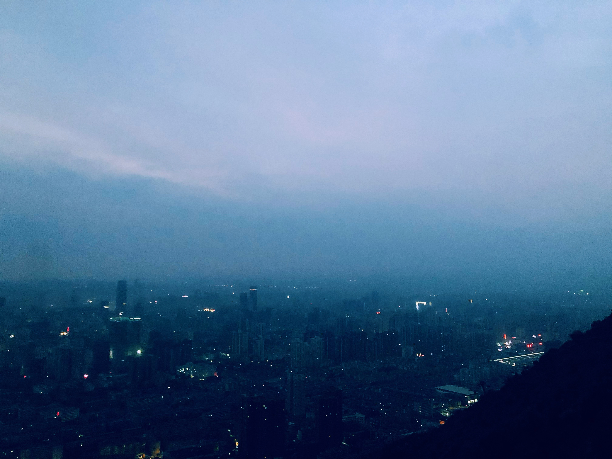
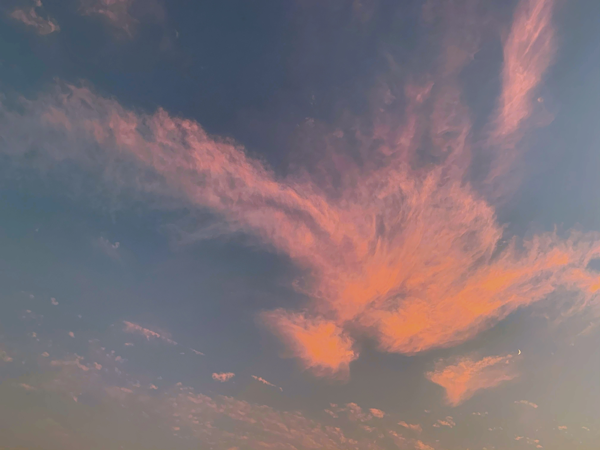
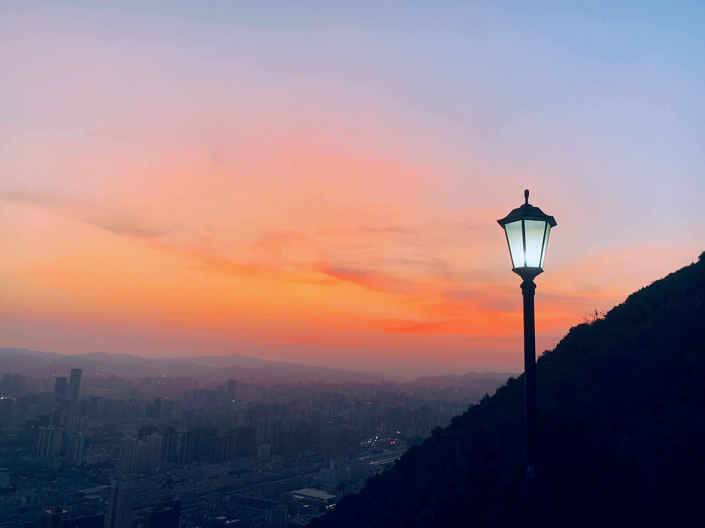

登山记
2021.9.12
 也许是自小成长在两山相夹的沿河城市的缘故，登高的回忆充斥着童年、少年，一直到现在的青年时光。好似兰州人的生活和休闲场景已经牢牢和山、和水绑定在一起：不是在黄河边喝着啤酒听涛涛水声，便是在南北两山烫三泡台俯瞰高楼林立的市区。
登山可以似乎不需要很多的理由。或许是亲朋好友聚在一起上山找个宽敞的地儿烧炭烤肉，或许是几个年轻人约在一起骑行上山锻炼身体。每逢节假日上山，没有太多的其他娱乐场所便上山，甚至是吊唁去世的亲友也要上山。印象中，清泉在山上，缆车在山上，白塔在山上：住在这里的人似乎不觉得狭长的城市拥挤，相反，两座延绵的大山巍峨屹立，却更有宏大的气势。就这样，似乎每每闲下来的时光就会想到往山上跑。于是，就有了这样的一篇生活小记。
说是再上，但次数用上全部手脚也早已数不清了。然而，趁夜色上山看日出的次数却寥寥无几。恰逢假期，看到同学拍的夜色照片，心血来潮叫上还留在兰州的朋友上山去看日出。为了能看到日出，我们约好五点出发。为了能在满足充足睡眠需求的情况下四点半前起床，前一天特地找事做耗尽精力，十点就躺在床上。然而事与愿违，依旧是抑制不住激动的心，躺在床上听到一中十一点多的晚自习铃声之后才渐渐睡去。
 尽管正值夏日，五点的兰州依旧凉风习习，裹了三层衣服才敢上山。出门前特地带了两瓶可乐想着在山顶吹凉风喝饮料。到达山顶，夜幕依旧，整个城市还是灯火通明的样子：亮着街灯的道路纵横交错，水泥森林间只有一两盏窗户透出亮光：沉睡中的城市处处都是神秘的气息。登山步道上积了厚厚的一层露水，空气中潮湿地好似刚下过一场瓢泼大雨。无疑，等待日出的时间是焦灼的。
待朦朦亮之时，我们已然选好了拍照地址。于是，随着天上紫色与深蓝色渐渐交映，翘首以盼的日出就这样来了。"这个城市又多了两个忧郁的人。"朋友打趣地说到。说来的确奇妙，夜色中的城市确实充满着寂寥的色彩。我们手忙脚乱地捕捉着这转瞬即逝的光景，十分钟，不，五分钟，一座百万人口的城市就苏醒了起来。
 天亮起来，看到有早起锻炼的人已经开始陆陆续续上山了，此刻朋友与我早已"收获满满"。将手机音量拉满，放起folklore和evermore：没有什么比这样优美的民谣更适合清晨烟雾笼罩的青山了。话说之后我一定要抽空一下这两张的乐评：它们是我2020年的全部。于是，一边旁若无人地放声高歌，一边抱着空荡荡的肚子直奔山下的金强牛肉面。穿过兰山镇，回到人头攒动的山下广场。收获后的喜悦再加上几小时的饥肠辘辘，我们二人胃口大开：肉蛋双飞最后连汤底都一扫而光。也许这就是登山的魅力：它让你日常的一切都显得如此诱人。令人神往的景致，悠扬婉转的音乐，供人饱腹的美餐。或许在百米之高的地方，开阔的不仅是眼界，更是自己世俗的心境。当然，那个神奇的早上还有许多回忆，但是既然要写登山，我的叙述就停留在回到市区吧。
话说想到写这篇游记，还是昨日去蜀山森林公园又有了一次登山经历后，想记下十天前的兰山之行。合肥是长江流域平原，所以这里山的海拔竟不到300米。尽管有一段类似山路的登山步道，但相较兰州还是有不小的落差。不过也还是有一些收获的：在公园里的野生动物园出来的时候，拍到了一张月亮和火烧云交映的照片，也算是给这个繁忙的一周画上了一个温馨的句号。